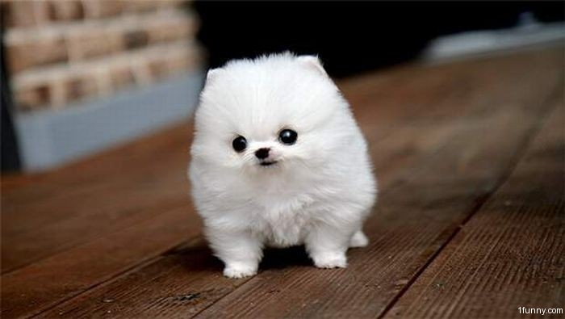

Sparkles the Dog
Professional Puppy

Objective
To find a good home where I can eat a lot of food and dirty your carpet.
Education
Potty Trained University
Experience
- Professional Sleeper
- Excessive Eater
- 3 years experience of being adorable
Special Skills
- Barking
- Being Cute
- Getting into trouble and being cute about it
References
- Oregon Humane Society (503) 777-7777